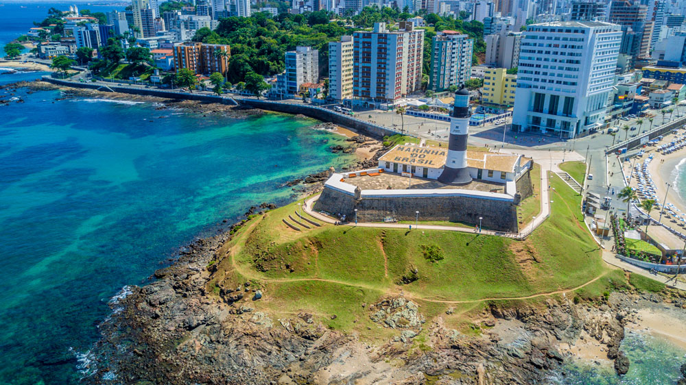

O que saber antes de ir?
Salvador, capital da Bahia, é um destino imperdível para quem busca sol, cultura, história e muita energia boa. Localizada no Nordeste do Brasil, a cidade encanta com suas praias paradisíacas, o centro histórico colorido e uma atmosfera única que mistura tradição e alegria em cada canto.
Ao passear pelo famoso Pelourinho, você vai se deparar com casarões coloniais, igrejas barrocas e muita música pelas ruas. É o lugar ideal para tirar fotos incríveis, conhecer a cultura afro-brasileira e sentir o ritmo contagiante do samba e do axé.
As praias são um espetáculo à parte. Da animada Porto da Barra até a charmosa Itapuã, Salvador oferece mar cristalino, águas mornas e ótimas opções para relaxar ou praticar esportes aquáticos. Não deixe de fazer um passeio de barco pela Baía de Todos-os-Santos e explorar ilhas paradisíacas como Itaparica e Frades.
A culinária baiana é outro ponto forte. Experimente o tradicional acarajé preparado pelas baianas nas calçadas, prove uma deliciosa moqueca e se renda aos sabores intensos do vatapá, do caruru e dos doces típicos da região.
Salvador também é conhecida por suas festas populares. O carnaval da cidade é um dos mais animados do mundo, com trios elétricos e blocos que arrastam multidões. Outras celebrações, como a Lavagem do Bonfim e a Festa de Iemanjá, fazem parte do calendário cultural e espiritual da cidade.
Com clima quente o ano inteiro, povo acolhedor e um pôr do sol inesquecível visto do Farol da Barra, Salvador é o destino certo para quem quer viver momentos inesquecíveis. Seja para curtir, descansar ou se conectar com a cultura brasileira, Salvador te espera de braços abertos!
Atrações
- Pelourinho
- Farol da Barra
- Rio vermelho
- Elevador Lacerda
Pelourinho
Pelourinho
O Pelourinho é um dos pontos turísticos mais famosos e visitados de Salvador, localizado no coração do centro histórico da cidade. Considerado Patrimônio Cultural da Humanidade pela UNESCO, o "Pelô", como é carinhosamente chamado pelos baianos, é um verdadeiro mergulho na história e na cultura afro-brasileira.
Com suas ruas de paralelepípedo, casarões coloniais coloridos e igrejas centenárias, o Pelourinho encanta turistas do mundo todo. Entre os destaques estão a Igreja e Convento de São Francisco, com seu interior todo revestido de ouro, e a Fundação Casa de Jorge Amado, dedicada ao famoso escritor baiano. O local também é palco de rodas de capoeira, grupos de percussão e apresentações culturais ao ar livre.
Durante o dia, o bairro ferve com ateliês, lojas de artesanato, museus e cafés charmosos. À noite, a música toma conta das ladeiras, com apresentações de samba, reggae, MPB e ritmos típicos da Bahia. É um local perfeito tanto para quem gosta de história quanto para quem busca viver a alegria contagiante do povo soteropolitano.
O cenário é único, com construções coloridas que remontam ao século XVII, em contraste com a energia moderna das manifestações artísticas que acontecem por toda parte. É também um dos melhores lugares para experimentar a culinária baiana, com restaurantes e bares que servem pratos típicos como moqueca, acarajé e bobó de camarão.
Visitar o Pelourinho é uma experiência completa: história, arte, fé, música e sabor, tudo em um só lugar. Seja para conhecer igrejas, assistir a uma apresentação do Olodum ou simplesmente caminhar pelas ladeiras e tirar belas fotos, o Pelourinho é parada obrigatória para quem visita Salvador.
é um dos destinos mais procurados na região e um ponto imperdível para quem visita Maceió.Dicas úteis para visitar o Pelourinho
- Como chegar: O Pelourinho está localizado na Cidade Alta, em Salvador. É possível chegar de táxi, carro por aplicativo, ônibus ou elevador Lacerda, que liga a Cidade Baixa à Cidade Alta e oferece uma vista panorâmica da Baía de Todos-os-Santos.
- Melhor horário para visitar: Durante o dia, especialmente entre 9h e 17h, é o período ideal para explorar os museus, igrejas e lojas. À noite, o bairro ganha vida com apresentações musicais, especialmente às terças-feiras, quando acontecem shows e eventos culturais.
- Segurança: Assim como em qualquer centro turístico, é importante ficar atento aos pertences e evitar ruas muito desertas, principalmente à noite. Prefira circular por áreas movimentadas e, se possível, com guias ou em grupo.
- O que vestir: Roupas leves e calçados confortáveis são ideais para caminhar pelas ladeiras e calçadas de paralelepípedo. Não esqueça o protetor solar e uma garrafinha de água.
- Imperdíveis: A Igreja de São Francisco, o Museu da Misericórdia, a Fundação Jorge Amado, os ensaios do Olodum, os ateliês de arte e os pontos de venda de acarajé preparados pelas baianas típicas.
- Curiosidade: O Pelourinho já foi cenário de videoclipes internacionais, como “They Don’t Care About Us” de Michael Jackson, gravado com o grupo Olodum — reforçando sua importância cultural e visibilidade global.
Farol da Barra
A Praia do Carro Quebrado é uma das joias mais isoladas e preservadas do litoral de Alagoas, situada a
cerca de 60 km ao sul de Maceió, no município de Barra de São Miguel. Conhecida por sua natureza intocada e
paisagens deslumbrantes, a praia é um verdadeiro refúgio para aqueles que buscam tranquilidade e um contato
direto com a natureza.
A principal característica da Praia do Carro Quebrado são as suas falésias coloridas, que formam um cenário
impressionante e único, criando um contraste vibrante com as águas cristalinas do mar. Essas falésias, com
tons que vão do vermelho ao laranja, são um espetáculo visual e tornam a praia um local ideal para quem
gosta de tirar fotos e explorar a natureza.
A praia é ideal para quem deseja fugir das grandes multidões, oferecendo um ambiente calmo e isolado. A água
é tranquila e convidativa para um banho relaxante, e o visual ao redor é perfeito para quem aprecia a paz e
a beleza natural. Apesar de não ter uma grande infraestrutura, existem algumas barracas simples que oferecem
petiscos e bebidas para os visitantes.
Além das paisagens, outro atrativo da Praia do Carro Quebrado são os passeios de buggy, que permitem
explorar a região e alcançar pontos de difícil acesso, proporcionando vistas ainda mais espetaculares das
falésias e da costa.
A Praia do Carro Quebrado é, sem dúvida, um destino imperdível para quem deseja conhecer um lado mais
selvagem e preservado do litoral de Alagoas, com uma combinação única de beleza natural, tranquilidade e
aventura.
Orla de Ponta Verde

A Orla de Ponta Verde é uma das áreas mais icônicas e movimentadas de Maceió, famosa por sua beleza natural,
infraestrutura de qualidade e opções de lazer para todos os gostos. Localizada no coração da cidade, essa
orla é um dos principais cartões-postais de Maceió e um ponto de encontro tanto para turistas quanto para os
moradores locais.
A orla é marcada por uma extensa faixa de areia branca, que se estende ao longo da costa e é banhada por
águas claras e tranquilas, ideais para um banho de mar relaxante. Uma das características que tornam a Orla
de Ponta Verde tão atrativa é a vista panorâmica do Mar de Maceió, com suas tonalidades esverdeadas, e a
proximidade de várias atrações turísticas, como a Praia de Pajuçara e o Mirante São Gonçalo do Amarante, de
onde se pode ter uma vista privilegiada da região.
Ao longo da orla, os visitantes encontram uma excelente infraestrutura, com quiosques e barracas de praia
que oferecem pratos típicos da culinária alagoana, como frutos do mar frescos e a tradicional tapioca. Além
disso, a região conta com uma ciclovia, facilitando o acesso para aqueles que preferem pedalar ou caminhar,
e uma avenida bem estruturada, com muitos bares, restaurantes e lojas, tornando o local um centro de
convivência e diversão.
A Orla de Ponta Verde também é palco de diversas atividades culturais e esportivas, como eventos musicais e
festivais, que acontecem ao longo do ano, atraindo tanto os turistas quanto a população local. A paisagem da
orla é ainda mais encantadora ao pôr do sol, quando o céu se tinge de cores vibrantes e oferece um
espetáculo à parte.
Com um ambiente acolhedor e uma combinação de beleza natural e infraestrutura moderna, a Orla de Ponta Verde
é um dos lugares mais agradáveis para relaxar, se divertir ou simplesmente apreciar a vista em Maceió.